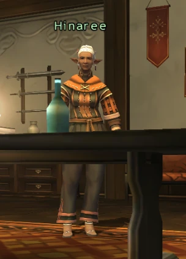
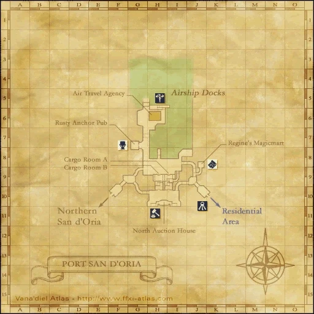
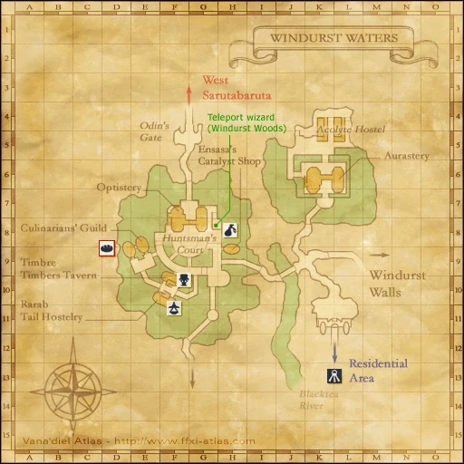
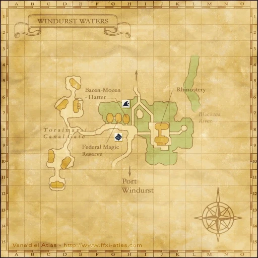
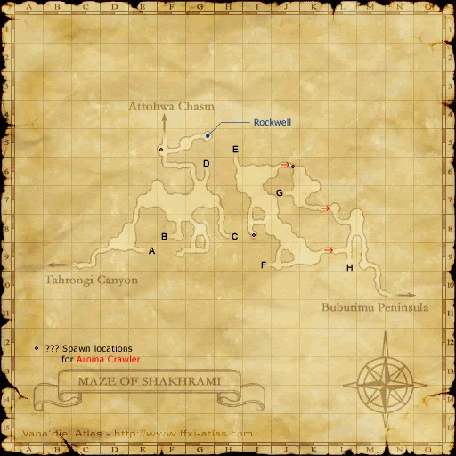
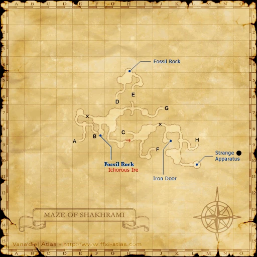
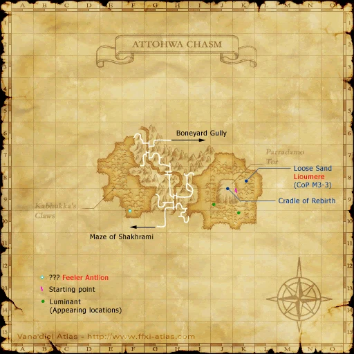
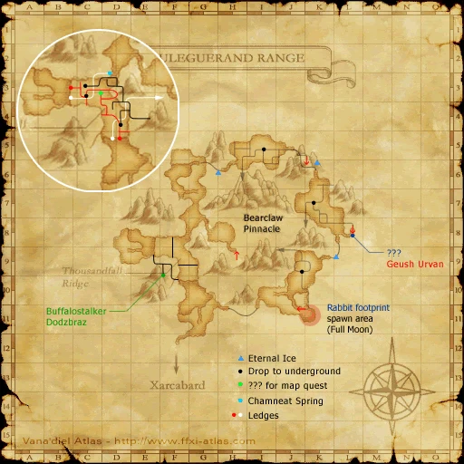

Before you begin
- Complete CoP 5-2.
- Three Paths active. Salt and siredon are optional, not entry keys.
Starting point
Hinaree · Southern San d'Oria · B-6
Era note: Historical reference cap: 50 for Head Wind; 60 for Flames for the Dead. Native battlefields use the server MAX_LEVEL instead. Native Head Wind permits Trusts; native Flames for the Dead defaults to no Trusts; optional era modules or Zenith overrides can change entry rules. This is code review, not a completed Zenith battlefield test.
People in this mission




Walkthrough
- Speak to Hinaree upstairs in Count Caffaule's Manor. Entanglement: enter Port San d'Oria, then speak to Chasalvige at the Northern San d'Oria cathedral, L-6.
- Head Wind: speak to Kerutoto (Windurst Waters south J-8), then Yoran-Oran (Windurst Walls E-5) until he discusses Attohwa.
- Travel through Maze of Shakhrami to Attohwa Chasm. Follow its route to Boneyard Gully at the northwest F-6 exit; examine the Dark Miasma inside and select Head Wind.
- Defeat Shikaree X, Y and Z. Control spare targets and interrupt their coordinated skillchains. Blackened Muddy Siredon is an optional weakening item.
- Flames for the Dead: enter Bearclaw Pinnacle through Uleguerand Range J-9. Select that battlefield and prepare before approaching Snoll Tzar.
- Burst Snoll Tzar down before Hypothermal Combustion ends the encounter. Optional Shu'Meyo Salt buys time; its use takes ten seconds, and simultaneous salt effects do not stack.
- Return to Cid at Metalworks H-8 to record Ulmia's branch.
Battle and progress notes
- Head Wind and Flames for the Dead are separate fights; winning the Mithra fight alone does not finish this branch.
- The historical guide gives Snoll Tzar a 45-second fuse. The pinned native monster instead grows through timed stages and can trigger combustion at its final stage; do not assume that exact historical timer.
Completion and reward
Ulmia’s Soulmate title; Ulmia branch completion.
Area maps
Open a zone below, then select a map to enlarge it. Match the named floors and grid coordinates in the steps; these are reference area maps, not a live position tracker.
Southern San d'Oria


Port San d'Oria



Northern San d'Oria


Windurst Waters






Windurst Walls


Maze of Shakhrami






Attohwa Chasm



Uleguerand Range



Metalworks


Zone guides
- Southern San d'Oria
- Port San d'Oria
- Northern San d'Oria
- Windurst Waters
- Windurst Walls
- Maze of Shakhrami
- Attohwa Chasm
- Boneyard Gully
- Uleguerand Range
- Bearclaw Pinnacle
- Metalworks
References
- HorizonXI: Promathia Mission 5-3/Ulmia's Path
- HorizonXI: Shu'Meyo Salt
- Reviewed mission implementation
- Reviewed mission implementation
- Reviewed mission implementation
- Reviewed mission implementation
- Reviewed mission implementation
Steps are an original summary of the linked walkthrough and reviewed source. Other servers’ bonus rewards are not included. How to read requirements, waits and battlefield notes.